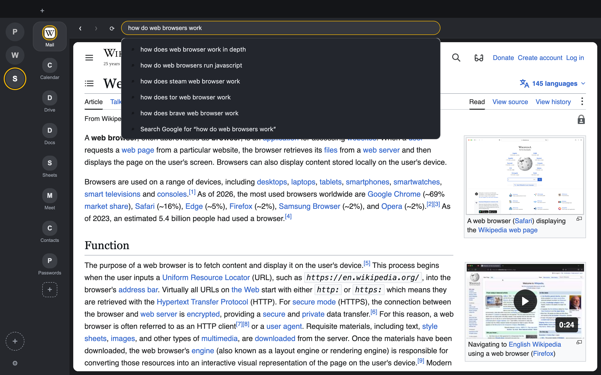
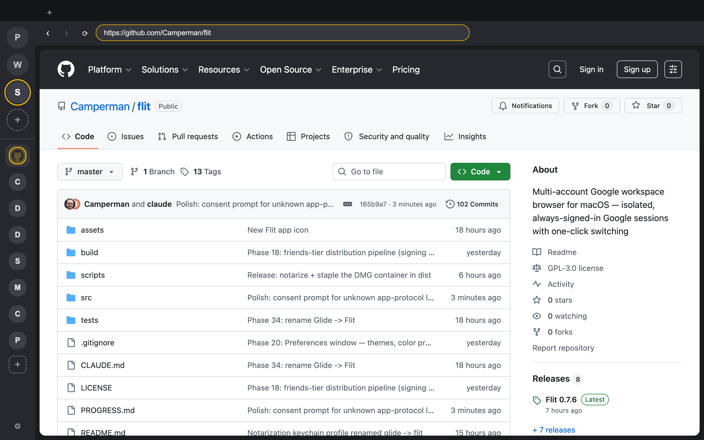

Everything you expect from a browser
Flit isn't a wrapper around a handful of sites — it's a real browser. Type a URL and go anywhere on the web, rendered by the same engine as Chrome.
- Omnibox address bar — enter a URL to navigate directly, or type anything to search with Google, DuckDuckGo, or Bing, with live search suggestions and history & bookmark autocomplete.
- Bookmarks bar — ⌘D to bookmark, folders, and one-click import of your Chrome bookmarks.
- Tabs, history, downloads — a full tab strip, browsing history with a dedicated page (⌘Y), and a downloads manager.
- Set it as your default browser — Flit registers for http and https; links from any app open in your active account.

One browser, all of your accounts
Each account in the sidebar is a completely separate browsing session. Accounts never bleed into each other and never log each other out — isolation is verified by an automated test on every build.
Always signed in
Every account keeps its own cookies, storage, and logins in a persistent partition. Switch with one click, ⌘1–9, or the ⌘K command palette.
Pinned apps per account
Pin Gmail, Calendar, Drive, or any site as an app with its own favicon and unread badge — per account, always a click away.
Notifications that know who they are
Native macOS notifications attributed to the right account, with per-account mute. Click one to jump straight to that account.
Chrome extensions
Install extensions per account straight from the Chrome Web Store — ad blockers, password managers, and more.
Private by design
Everything is stored locally on your Mac. No telemetry, no analytics, no account required to use the browser itself.
Feels at home on macOS
Six color themes with light and dark appearance, incognito windows, multiple windows, find-in-page, print, spell-check, and auto-update.
Your whole workspace in one sidebar
Prefer everything in one column? The unified sidebar layout stacks your accounts and pinned apps together on the left.
